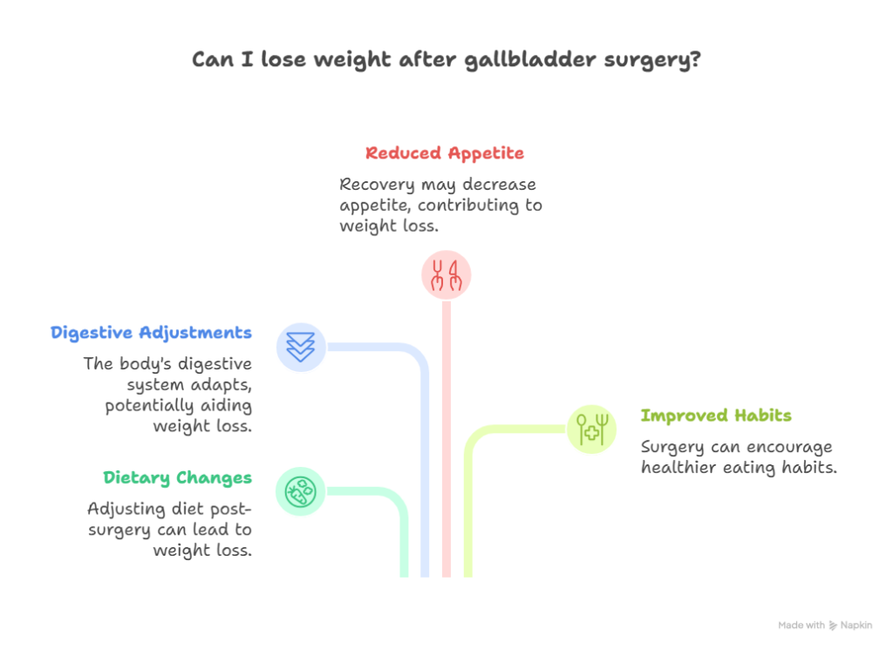
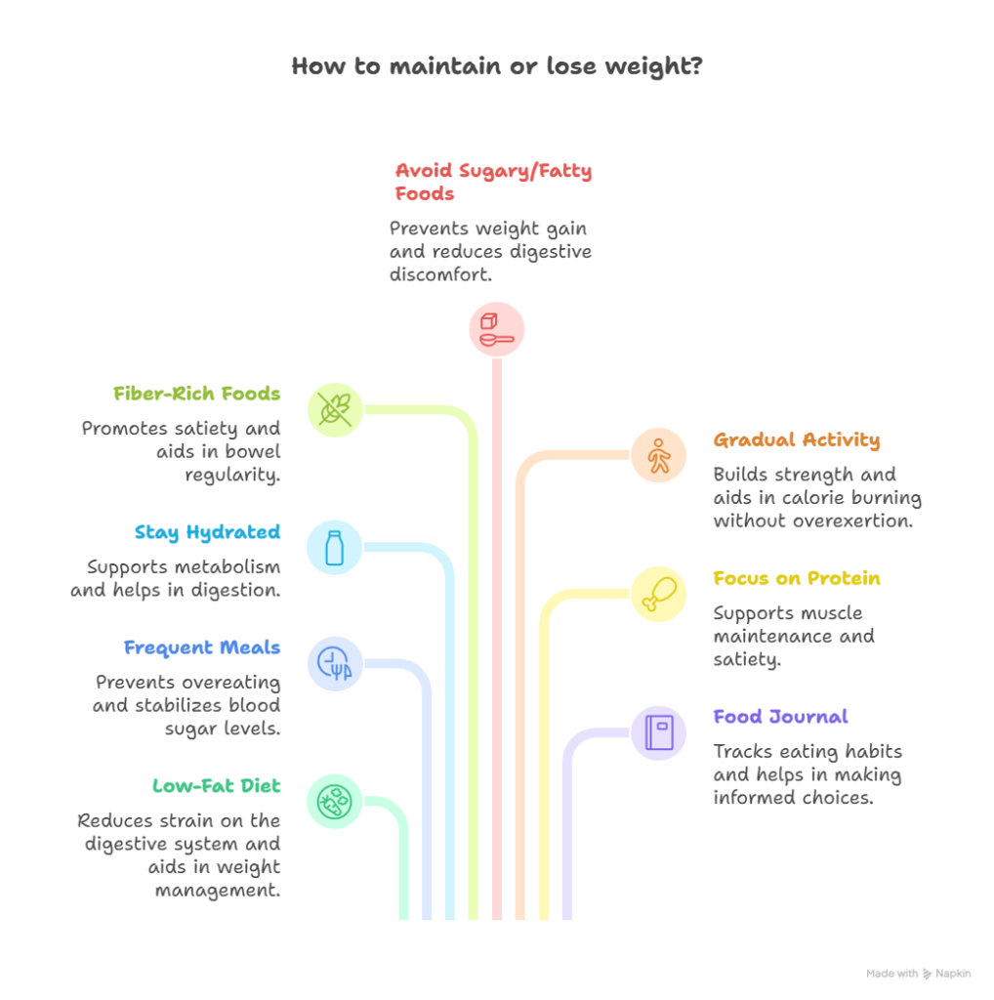
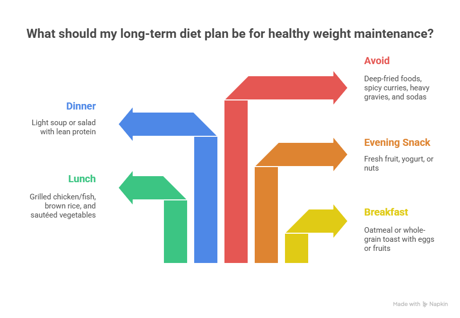

Gallbladder surgery, also known as cholecystectomy, is one of the most common surgical procedures performed to remove the gallbladder — usually because of gallstones or gallbladder inflammation. Many people who undergo this surgery often wonder about how it might affect their weight. Some experience weight loss after the procedure, while others notice minor weight gain.
In this blog, we’ll discuss in simple terms whether you can lose weight after gallbladder surgery, what causes these weight changes, how digestion works after the surgery, and what you can do to maintain a healthy weight post-surgery.
Can You Lose Weight After Gallbladder Surgery?
“In this blog, we’ll discuss in simple terms whether you can lose weight after gallbladder surgery, what causes these weight changes, how digestion works after the surgery.”
Book Your Appointment TodayUnderstanding Gallbladder
The gallbladder is a small pear-shaped organ located just beneath your liver. Its main function is to store bile, a fluid produced by the liver that helps digest fats. When you eat fatty foods, the gallbladder releases bile into your small intestine to aid in fat digestion.
When the gallbladder is removed, the bile flows directly from the liver to the intestine in a continuous stream, rather than being stored and released in controlled amounts. This change in bile flow can temporarily affect digestion, which is why some patients notice mild digestive changes or even slight weight fluctuations after surgery.
Can You Lose Weight After Gallbladder Surgery?
Yes, you can lose weight after gallbladder surgery, but the reasons vary from person to person. Weight loss after surgery is usually due to temporary dietary and lifestyle changes, rather than the surgery itself. Let’s understand why that happens.

1. Dietary Changes After Surgery
After the procedure, your doctor will recommend a low-fat, light diet to help your digestive system adjust to the absence of the gallbladder. During this period, you may eat smaller portions and avoid fatty, fried, or processed foods. Naturally, this leads to reduced calorie intake, resulting in weight loss.
2. Digestive Adjustments
Without the gallbladder, bile flows continuously into your intestines. Initially, your body may not digest fats efficiently, which can cause bloating, diarrhea, or loss of appetite. This reduced fat absorption can contribute to short-term weight loss after surgery.
3. Recovery and Reduced Appetite
Many patients experience a loss of appetite or early fullness after gallbladder surgery. Since your digestive system is still healing, you might eat less than usual, leading to gradual weight reduction in the first few weeks.
4. Improved Dietary Habits
Often, gallbladder problems arise due to a diet rich in unhealthy fats and cholesterol. After surgery, patients are encouraged to eat healthier foods like lean proteins, vegetables, and whole grains. This lifestyle change not only supports recovery but can also lead to sustainable weight loss in the long run.
Why Some People Gain Weight After Gallbladder Surgery
While some people lose weight, others may gain weight after gallbladder surgery. This can happen for a few reasons:
- Digestive adaptation: Once your body adapts to the continuous bile flow, fat digestion may normalize, and if you go back to eating high-fat foods, you could gain weight.
- Reduced activity: Post-surgery recovery often involves rest and reduced physical activity. Without exercise, calorie burn decreases, making it easier to gain weight.
- Comfort eating: Some patients indulge in comfort foods during recovery, especially soft, carb-rich meals, leading to unwanted weight gain.
Maintaining a balanced diet and gradually resuming physical activity can help prevent this.
How Gallbladder Surgery Affects Digestion and Metabolism
After gallbladder removal, bile is less concentrated and continuously flows into the intestines. This means that your body digests fats in smaller, slower quantities. For most people, this doesn’t cause major problems, but it does require a few dietary adjustments:
- Avoid eating very large or fatty meals.
- Eat smaller, more frequent meals throughout the day.
- Focus on foods rich in fiber, lean protein, and complex carbohydrates.
These habits not only aid digestion but also promote healthy weight management after surgery.
Tips to Maintain or Lose Weight After Gallbladder Surgery

If your goal is to lose weight or maintain your current weight after the surgery, here are some effective and safe tips:
1. Start with a Low-Fat Diet
Stick to easily digestible foods such as soups, steamed vegetables, boiled rice, lean chicken, fish, or lentils. Avoid fried foods, butter, and processed snacks.
2. Eat Smaller, Frequent Meals
This helps your digestive system process food efficiently and prevents bloating or discomfort. Smaller meals also support steady energy levels and calorie control.
3. Stay Hydrated
Drink plenty of water throughout the day. Hydration supports digestion, boosts metabolism, and prevents constipation — a common issue after surgery.
4. Include Fiber-Rich Foods
Gradually add whole grains, fruits, and vegetables to your diet. Fiber promotes bowel regularity and helps you feel full longer, aiding in weight control.
5. Avoid Sugary and Fatty Foods
Limit desserts, sugary beverages, and fried foods. These are harder to digest and can cause discomfort post-surgery.
6. Resume Physical Activity Gradually
Once your doctor approves, start light activities such as walking. Regular physical movement improves digestion, burns calories, and enhances recovery.
7. Focus on Protein
Lean proteins like eggs, tofu, fish, and legumes help you feel full and preserve muscle mass while losing fat.
8. Keep a Food Journal
Tracking what you eat can help you identify patterns that contribute to unwanted weight gain and make healthier adjustments.
When to Consult Your Surgeon or Doctor
You should reach out to your healthcare provider or your surgeon (such as Dr. Atul Peter’s, known for performing the Best Gallbladder Surgery in Delhi) if you experience:
- Persistent diarrhea or constipation
- Severe abdominal pain or bloating
- Continuous nausea or vomiting
- Unintended or excessive weight loss
- Difficulty digesting even light foods
These could indicate digestive complications or nutritional deficiencies that need medical attention.
Can Gallbladder Surgery Help in Weight Loss?
Gallbladder surgery itself is not a weight loss surgery. Unlike bariatric procedures that are designed to aid weight reduction, gallbladder surgery’s purpose is to remove a diseased organ.
However, temporary weight loss is common due to:
- Reduced fat intake post-surgery
- Digestive changes
- Improved eating habits
The goal should be to maintain steady and healthy weight management through lifestyle improvements, not rapid or drastic changes.
Long-Term Diet Plan for Healthy Weight Maintenance

Once your digestion stabilizes (typically within 4–6 weeks), you can follow a long-term diet plan:
- Breakfast: Oatmeal or whole-grain toast with eggs or fruits
- Lunch: Grilled chicken/fish, brown rice, and sautéed vegetables
- Evening snack: Fresh fruit, yogurt, or nuts
- Dinner: Light soup or salad with lean protein
- Avoid: Deep-fried foods, spicy curries, heavy gravies, and sodas
This balanced diet supports healthy digestion, prevents fat buildup, and helps maintain a comfortable weight.
Can You Lose Weight After Gallbladder Surgery?
“In this blog, we’ll discuss in simple terms whether you can lose weight after gallbladder surgery, what causes these weight changes, how digestion works after the surgery.”
Book Your Appointment TodayConclusion
So, can you lose weight after gallbladder surgery? Yes — but it depends largely on your post-surgery diet, activity level, and digestive response. Weight loss after gallbladder removal is usually due to healthier eating habits and temporary digestive changes, not the surgery itself.
By maintaining a balanced diet, exercising regularly, and following your doctor’s advice, you can stay healthy and prevent unwanted weight gain. If you’re considering gallbladder surgery or need expert advice on recovery and diet management, you can consult Dr. Atul Peter’s, who is known for performing the Best Gallbladder Surgery in Delhi with excellent patient outcomes and long-term recovery support.
Frequently Asked Questions
Is it normal to lose weight after Gallbladder Surgery?
How much weight can I expect to lose after Gallbladder removal?
Why do some people gain weight after Gallbladder Surgery?
What foods should I avoid after Gallbladder Removal?
Can Gallbladder Surgery help in long-term weight loss?
Should I take supplements after Gallbladder Surgery?
Recommended Further Reading
Have Personal Health Questions?
Consult with Dr. Atul Peters and our expert multidisciplinary team at Max Smart Super Speciality Hospital, Saket, New Delhi.
Book Your Consultation